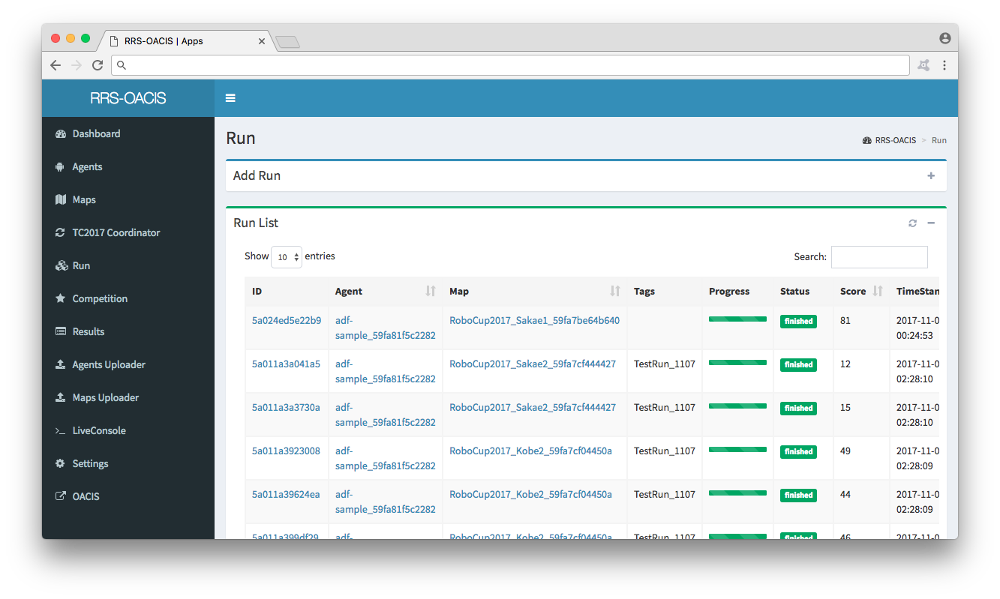

RRS-OACIS (RoboCupRescue Simulation OACIS)は， RoboCupRescue simulation用のシミュレーション管理ソフトウェアです. Agent(災害シミュレーションに置いて動作する自律プログラム)とMap(地理データ、シナリオデータ)，シミュレーション自体と実行結果を管理します． RRS-OACISでは管理したデータを使用して研究や競技会をすることが出来ます．
（以下の画像は拡大出来ます）
本ドキュメントでは，RRS-OACIS使用したシミュレーションの仕方を説明します．
サーバーのインストールと初期設定をおこないます．
AgentとMapのアップロード方法を説明した後， Run Appを使用した簡単なシミュレーション方法を紹介します．
各種操作についての説明です.
Appの追加方法を載せています．